Newborn
Se considera newborn al tipo de fotografía que se da cuando el retrato es de un recién nacido de menos de 28 días. Lo habitual en este tipo de fotografía es que esté entre los 5 días a 12 días de su nacimiento. De esta manera se puede capturar la esencia del recién nacido, en la cual no pierde la postura de cuando está en el vientre de la madre, siendo totalmente natural.


 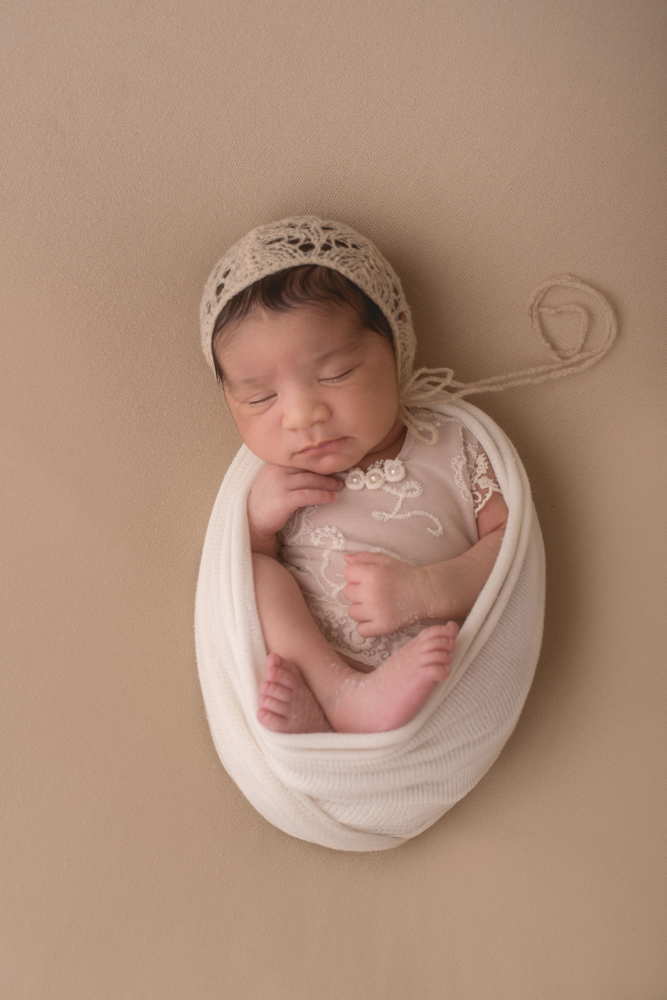
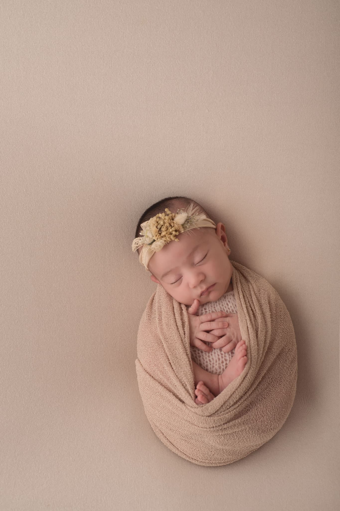
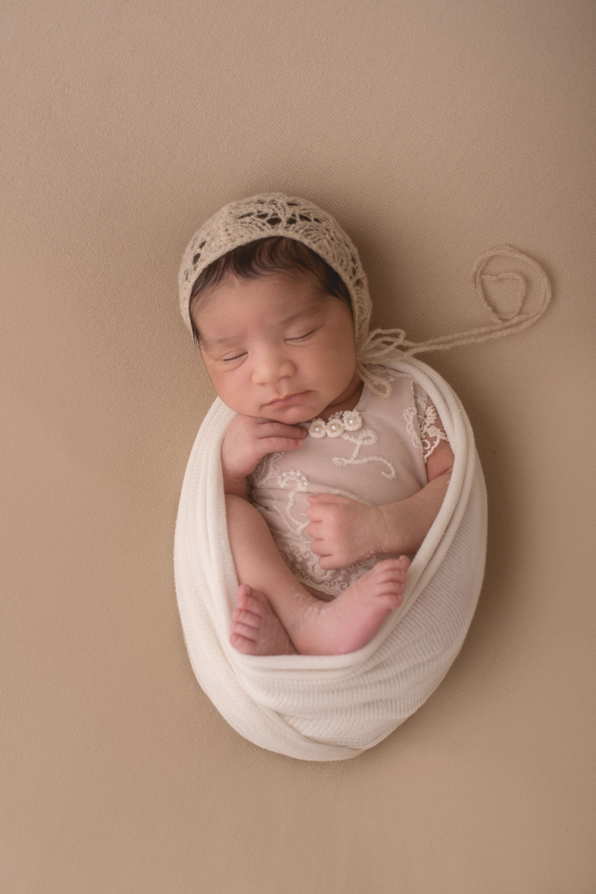
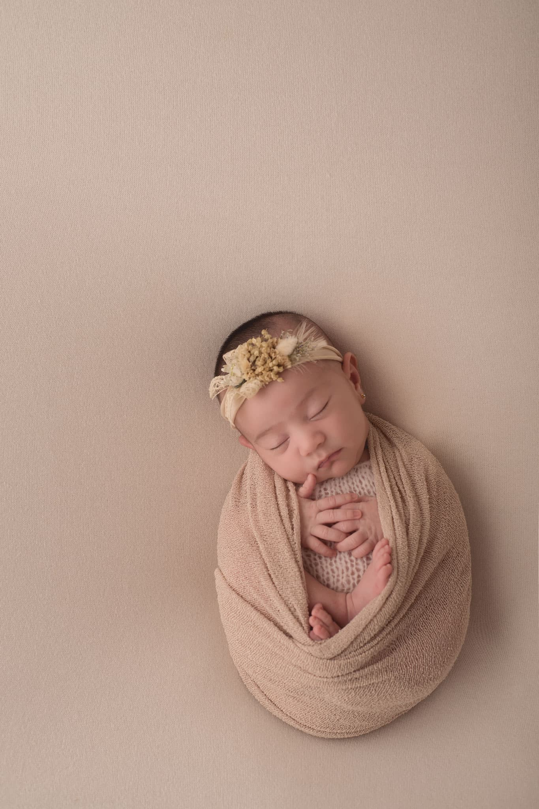
 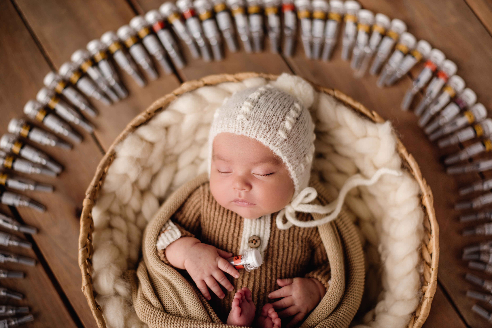
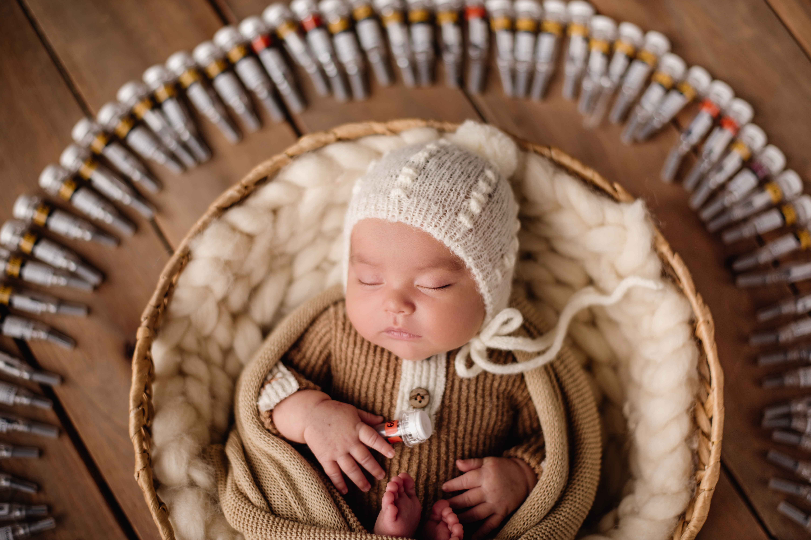

 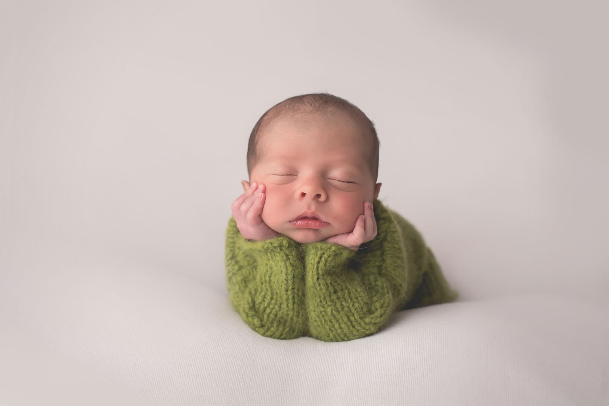
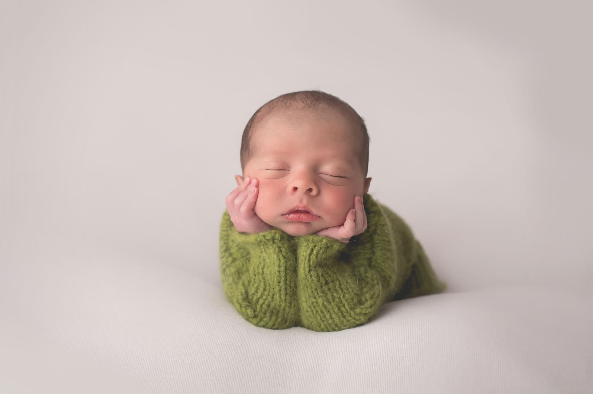
Lo interesante de este tipo de fotografía, es que no se realiza en cualquier momento, y es lo que la hace tan especial a diferencia de otros estilos fotográficos. Se lleva a cabo en un periodo de tiempo ÚNICO que nunca se va a poder volver a repetir.
 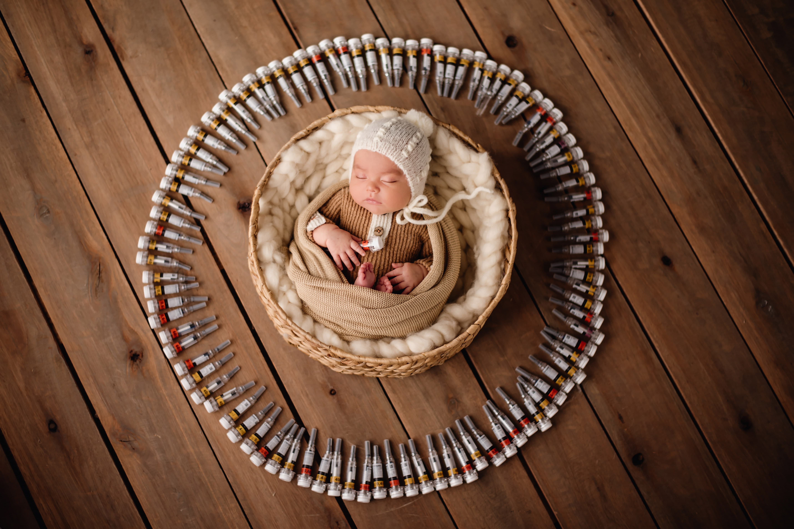
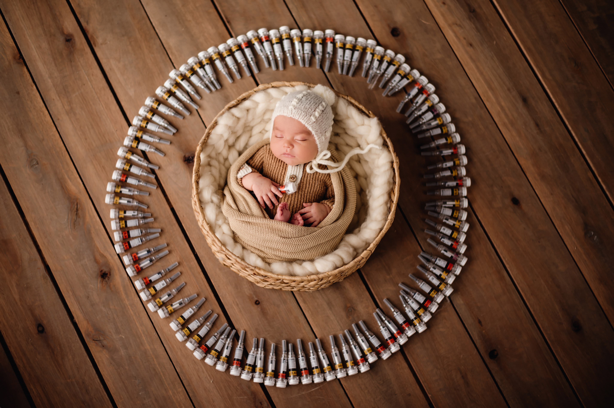
 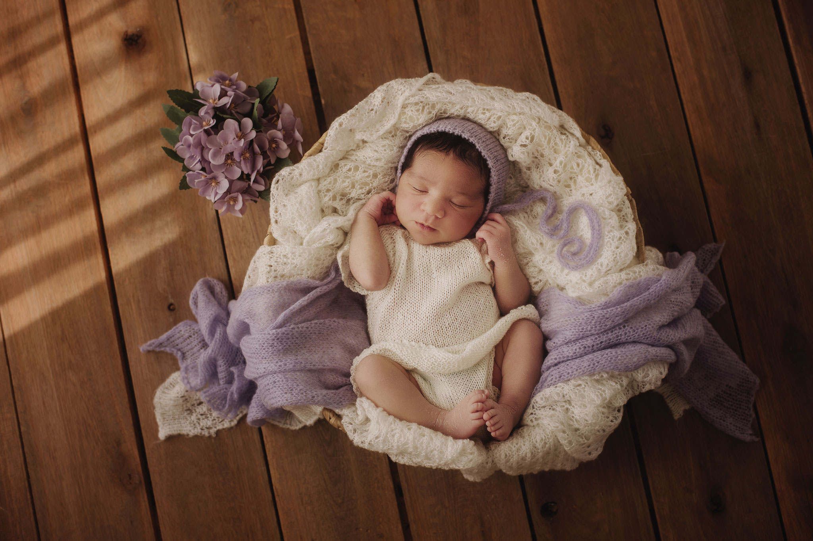
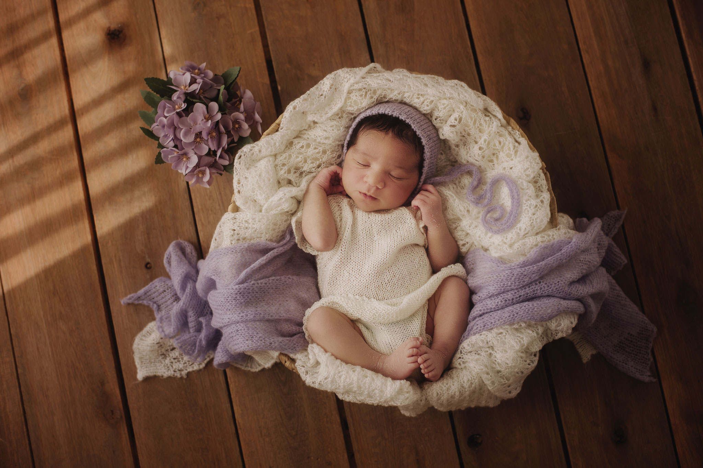
 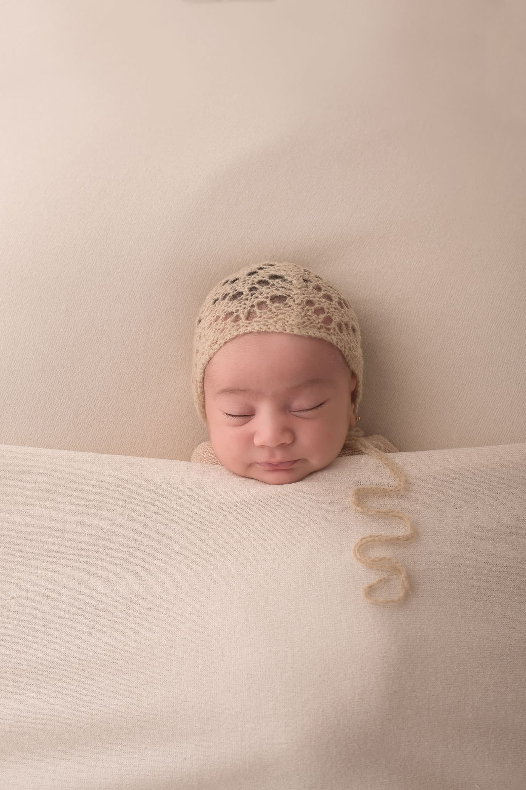
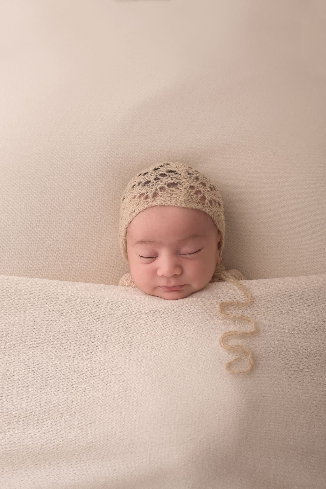